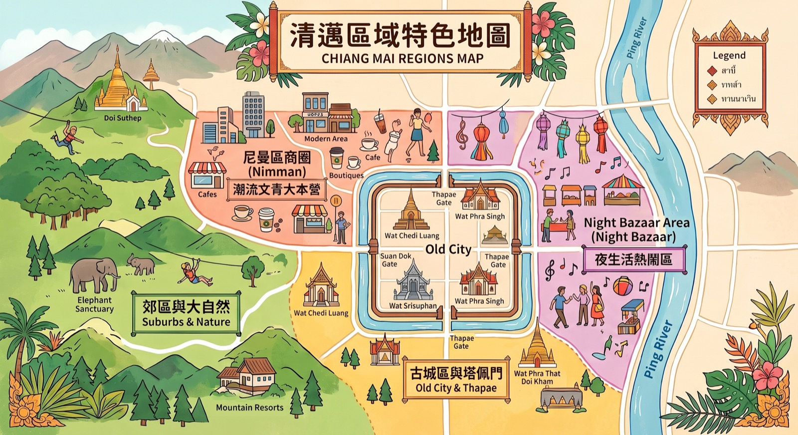
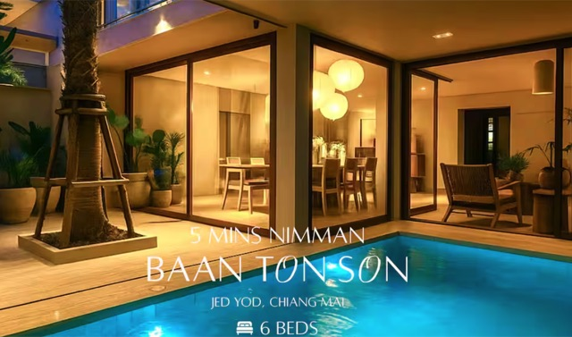
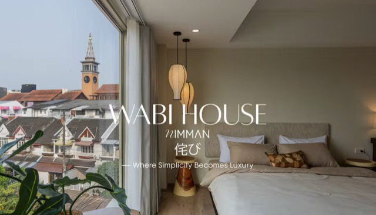
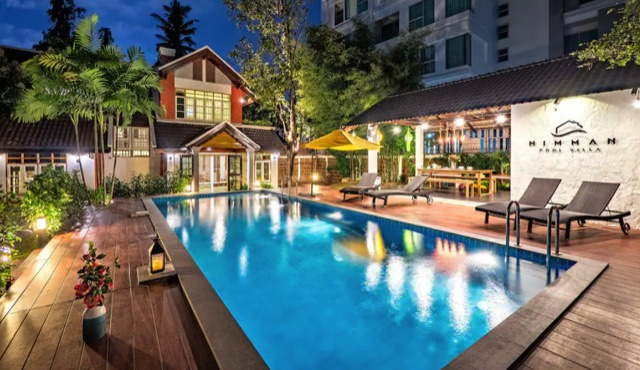
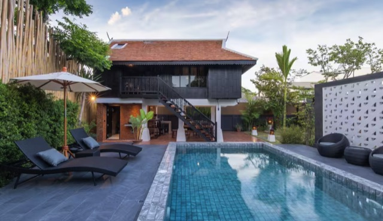
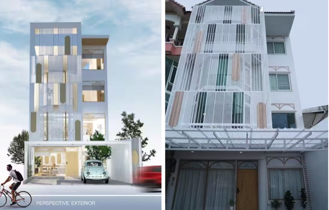

清邁自由行前準備
🛂 台灣免簽
台灣護照享有入境泰國免簽證待遇，每次最長可以停留高達 30 天。
📱 TDAC 數位入境卡（有中文）
泰國政府現在已經全面廢除紙本入境卡，改為「TDAC 數位入境卡」。所有旅客必須在抵達泰國前 72 小時內，自己上網填寫航班資訊、住宿地址與個人資料。填完後會收到一個 QR Code，過海關時連同護照一起出示給官員掃描。
前往 TDAC 線上填寫 →💱 泰銖換匯策略
目前泰銖跟台幣的匯率大約維持在 1:1 到 1:0.9 之間，其實非常接近。建議在台灣的銀行先換個一兩千塊泰銖帶在身上，用來支付剛下飛機的計程車費或是買杯手搖飲就好，剩下直接帶著「新台幣千元大鈔」來清邁當地換最划算。
推薦古城區的塔佩門附近綠色的 Super Rich，那裡匯率通常是全清邁最好的。
現金抽查（必看）→🛡️ 旅遊保險
建議不管國旅還是國外旅行一定要買保險！可自行找自己配合的保險公司保旅平險和不便險。
🛺 交通
清邁自由行不像曼谷那樣有捷運，觀光客會使用的交通為 Grab 叫車、雙條車、嘟嘟車，也有客製化包車或一日遊等選擇。人多建議 Grab、客製化包車或一日遊。
註冊 Grab 需要一組泰國電話號碼，建議購買有通話功能的 SIM 卡，像是泰國 True 5G SIM 卡含通話。
前往 Klook 購買泰國 SIM 卡 →🔌 泰國插座電壓
泰國使用的插座型式主要為 A、B、C 型，各大飯店或民宿的插座型態可能不一樣。A 型（台灣常見形式，兩個扁腳）、B 型（台灣常見形式，兩個扁腳加一個接地線的三插頭），但 C 型就與台灣完全不同，因此建議攜帶萬國轉接頭最方便。不論是飯店、民宿或咖啡廳，有時插孔種類不一致，萬國轉接頭能避免充電時與插座不合的狀況。
泰國電壓為 220V，而台灣為 110V。多數手機、筆電、相機充電器都支援 100–240V，因此不需額外變壓器。但像是吹風機、電棒捲、離子夾、刮鬍刀等美容電器，使用前請確認是否支援國際電壓，若非國際電壓建議攜帶變壓器，以免電壓過高損壞設備。
延伸閱讀：泰國旅遊行前準備 →🧴 防曬、防蚊與醫藥用品
泰國陽光強烈、氣候潮濕，防曬乳、防蚊液絕對是行李清單必備。且泰國為登革熱感染風險國家，若要前往郊區或叢林活動（如清邁大象公園、叢林飛索等），一定要加強防蚊措施，避免被蚊蟲叮咬。
常用藥品也別忘記啦！建議準備：暈車藥、止痛藥、腸胃藥、過敏藥等，若有特殊或慢性疾病也要攜帶足量藥物及醫師證明（若遇到抽查可提供證明），以防萬一。
🧾 退稅須知
在泰國清邁購物後要辦理退稅（VAT Refund）：
✅ 單本護照購物未滿 20,000 泰銖：可直接到機場退稅櫃檯辦理，不需海關蓋章。
✅ 單本護照購物超過 20,000 泰銖：需攜帶購買商品至海關檢查，先取得海關印章後，才能辦理退稅。
⚠️ 建議提早抵達機場，尤其購買精品、名牌包、3C 產品等高單價商品，海關可能會要求現場出示商品檢查。
清邁機場退稅流程：海關檢查（超過 20,000 泰銖者）→ 辦理登機 → 退稅櫃檯領取退稅款項
行前須知：航班與天氣
| 航空公司 | 英文名稱 | 去程 TPE → CNX | 回程 CNX → TPE | 行程特色 |
|---|---|---|---|---|
| 中華航空 | China Airlines | CI85107:30–10:20每天 | CI85211:20–16:00每天 |
早去午回
一早出發，抵達後剛好可以吃午餐並開始行程。 |
| 長榮航空 | EVA Air | BR25707:40–10:25每天 | BR25811:30–16:35每天 |
早去午回
與華航時間相近，第一天能將時間最大化。 |
| 星宇航空 | STARLUX | JX75113:05–16:05週二、三、四、六、日 | JX75217:15–22:15週二、三、四、六、日 |
午去晚回
不用凌晨趕機場，最後一天還能從容吃個下午茶再前往機場。 |
| 泰國亞洲航空 | AirAsia | FD24318:55–21:45週一、三、四、五、六、日 | FD24201:50–06:40週一、三、四、五、六、日 |
晚去紅眼回
適合下班後直奔機場，且最後一天可玩到半夜；但須評估體力。 |
備註：各航班時間與營運日期可能隨航空公司季節班表微調，亞航回程也有凌晨 00:05 起飛的班次，實際起降時間與班期請以購票當下官方公告為準。
🌤️ 1 月份天氣
清邁的「涼季」，全年最舒服的季節！降雨機率低，很適合戶外行程。
👕 穿搭建議
強烈建議「洋蔥式穿搭」：白天以夏裝為主，早晚及山區務必準備薄外套；參訪寺廟需有袖上衣與過膝長褲或長裙。
清邁區域解析

尼曼區 Nimman
清邁版的「弘大商圈」，潮流文青大本營。咖啡廳、設計選物店、酒吧林立，生活機能最現代。
代表景點
- 尼曼一號 One Nimman：融合歐風建築、藝術設計、咖啡美食與文創小店的複合式商場。旁邊尼曼路一巷內有白色市集 White Market。
- 寧曼路商圈：1 到 17 巷特色巷弄
- Maya 百貨：尼曼路與 Huay Kaew 路交叉口，是清邁最潮流的現代化購物商場
按摩店
- Cheeva Spa：療程前會先填表單，可以針對自己需求調整力度。迎賓飲料是水果蘇打、按摩後點心有熱茶和芒果糯米飯。按摩店旁邊有賣抹茶的店。
- Vintage Thai Massage 2 Nimman Soi 5：高 CP 值泰式按摩，提前透過臉書線上預約喔！
- Fah Lanna Spa：有古城、寧曼、夜市三間分店，每間店裝潢氛圍都不同。有提供泰式按摩、足部按摩、精油按摩、藥草球按摩、敲筋按摩等服務。
夜市區 Night Bazaar
緊鄰湄平河，夜生活熱鬧。下樓就是美食攤販與平價按摩。
代表景點
- 長康路夜市：位在古城東側，每天晚上都有營業，攤位多又熱鬧，附近也有不少按摩店。
- 瓦洛洛市場：清邁最大乾貨零食市場，離藤編一條街很近，可以安排在一起。
- 清邁真心市集 Jing Jai Market：當地最人氣的周末市集，充滿文青的氛圍超好逛，有許多手工藝品、亞麻衣服、藤編包包、手做飾品等攤位。
- 椰林市集 Coconut Market：位置湄平河右側上方，坐落在高聳椰子林中的週末限定文青市集，中午過後許多攤位就開始收攤了。
- 雨樹市集 Chamcha Market：買泰北藍染與服飾、手工藝品的好地方，有一點華山松菸感，但更漂亮。市集尾端的 Meena Rice Based Cuisine，這家店以其精緻的泰北草本料理聞名，更曾連續多年榮獲米其林必比登推薦。
古城區與塔佩門 Old City & Thapae
歷史核心區。護城河環繞，步調悠閒，古寺與傳統老店聚集。進入寺廟不可穿短褲、短裙、洞洞褲、無袖背心、露肩露背裝等。
代表景點
- 塔佩門：古城區熱門打卡點，許多遊客會租借泰服在此拍照。雖然拍出來很仙，但現場滿地鳥屎味，而且當成群的鴿子被嚇飛時，漫天塵土和羽毛真的不太衛生，過敏兒請務必戴好口罩。平日上午或傍晚人潮相對較少，週日傍晚起塔佩門廣場會成為清邁週日夜市的起點。
- 柴迪隆寺：寺廟中央的四方形大佛塔，是清邁歷史標誌性的建築之一，也是地位最高的寺廟建築。除了大佛塔，大殿裡的金箔佛像也是必看的重點，也很適合穿泰服拍照喔。門票每人 50 泰銖。
- 帕邢寺：主殿有主佛帕邢佛像，巨大且金碧輝煌，看起來非常莊嚴與壯觀，金色的大佛塔也是一大亮點，陽光下更顯得格外耀眼。
- 清曼寺：最著名的是由 15 頭石雕大象托起的「大象佛塔」，以及兩尊珍貴的佛像「水晶佛」與「小金佛」。
- 湄卡運河市集 Khlong Mae Kha：又叫水溝市場，被譽為「清邁版小樽運河」，日泰混搭風文青景點。每日下午 3 點開始營業，建議 17:30 或 18:00 後再來，店開比較多。
周邊郊區 Suburbs
適合遠離塵囂，享受山林 Villa、體驗大象營或叢林飛索。
代表景點
- 雙龍寺/素帖寺（Wat Phra That Doi Suthep）：觀光客較多，俯瞰清邁絕美全景的無敵殿堂。外國遊客的純門票是 30 泰銖，如果包含單程電梯纜車，費用則是 50 泰銖。
- 悟孟寺（Wat Umong）：擁有超過 700 年歷史的古老「森林寺廟」，有地底佛堂、會說話的樹，洗滌心靈的好所在。門票價格為每人 20 泰銖。
- 來康寺（Wat Phra That Doi Kham）：清邁信眾公認最靈驗！最有名的就是龍婆壇猜佛，之前同事來許願，過了半年壞主管就被辭退，非常推薦但許願要用正向方式許喔！
- Elefin Farm & Cafe 大象咖啡廳：可以一邊喝咖啡，一邊與大象近距離互動。
- Cypress Lanes：清邁歐洲風秘境角落咖啡廳，以「松樹步道」著稱。
- 真心市集 Jing Jai Market：當地創意手工藝品、手工服飾、小農自產農產品集散地。最熱鬧、攤位最齊全的時段是每週六、日早上，平日雖然也有一些店面會開，但氣氛和規模就完全不同了。
湄登區 Mae Taeng
清邁市區西北方約 60 分鐘車程，通常安排包車一日遊。
代表景點
- 清邁藍廟（Wat Ban Den）：擁有 130 年歷史的當地信仰中心，由多座蘭納風格的藍頂佛殿與精緻神獸雕刻組成。和清萊藍廟不一樣喔。
- 黏黏瀑布（Bua Tong Sticky Waterfall）：可以手腳並用、踩著獨特岩面安全攀爬登頂的著名玩水瀑布。
- 天使瀑布（Dantewada Land of Angels）：宛如人間仙境的森林瀑布公園，園區內設有景觀咖啡廳，充滿迷霧、花海、水景與好拍的造景。
- 湄登大象園／大象營：可以近距離觀察、友善接觸大象或是體驗竹筏漂流與叢林生態的知名去處。
- 湄登河激流泛舟：提供刺激的 10 公里河道激流與山林瀑布嬉水體驗。
其他一日遊旅行團景點
推薦行程
- 茵他儂山國家公園一日團：有「泰國屋脊」之稱，車程約 2 至 2.5 小時，帶你登上海拔 2,565 公尺的泰國最高峰。
- 清萊白廟黑廟藍廟一日遊：參觀著名的三色寺廟系列。
- 清邁叢林高空滑索體驗：在清邁叢林中飛躍，多達 34 個平臺可供攀爬，22 條高空滑索等你體驗！
清邁住宿與價格參考
依區域整理住宿選項，
價格為 9 人分攤下的人均每晚金額。
實際費用以訂房頁面即時報價為準，
第一次到清邁推薦住在尼曼區或古城區。
尼曼區 Nimman
適合喜歡現代便利、咖啡廳與血拼的旅客。離機場近，缺點對聲音敏感的朋友要稍微注意。

BanTonSon
10 人・5 房・6 床・6.5 衛浴
NT$2,000／人・晚

WabiHouse
12 人・5 房・5 床・4.5 衛浴
NT$1,800／人・晚

Nimman 私人泳池別墅
13 人・4 房・10 床・4 衛浴
NT$1,700／人・晚

Modern Thai Style Private Pool Villa
9 人・4 房・5 床・6 衛浴
NT$1,000／人・晚

Lapin No.8
10 人・4 房・4 床・3.5 衛浴
NT$640／人・晚
古城區與塔佩門 Old City & Thapae
適合第一次來想看古蹟、體驗傳統文化的旅客。缺點道路較小、車多，部分老飯店設施可能比較有年代感。
清邁市集指南：從早到晚買不停
在地早市限定，早點去最能體驗在地人的生活感。
尼曼區文青市集，手作、小吃都好逛（部分時段可能延長至週一）。
尼曼區夜間市集，適合搭配 One Nimman 一起逛。
週五限定散步街，晚上吃吃逛逛剛剛好。
超人氣椰子林市集，拍照打卡超有度假感。
綠蔭下的小而美手作市集，質感很高，適合慢慢挖寶。
咖啡廳、選物店、手作小店聚集，很有清邁特有的慢活氛圍。
尼曼區文青市集，手作、小吃都好逛。
週六經典夜市，傳統泰北小吃、手工藝與在地銀飾通通有。
超人氣椰子林市集，拍照打卡超有度假感。
綠蔭下的小而美手作市集，質感很高，適合慢慢挖寶。
咖啡廳、選物店、手作小店聚集，很有清邁特有的慢活氛圍。週末攤位與人潮較多，想感受熱鬧氣氛可安排週末前往。
尼曼區文青市集，手作、小吃都好逛。
清邁最大週日步行夜市，第一次來清邁絕對必逛。
河道旁散步型市集，傍晚亮燈後更有日式混搭泰式的氣氛。
經典觀光夜市，買伴手禮、吃海鮮海排檔很方便。
學生最愛！平價服飾、在地泰式小吃選擇超多。
真心文創市集 Jing Jai Market｜週末早上 必去
早上市集
週末 06:30–15:00
手工藝文創與小吃攤位為主，13:00–14:00 後會陸續收攤，建議早點出發。
Good Goods Zone
平日 08:30–22:00、週末 06:30–22:00
常設選物店與質感商店，平日去也能逛。
Vintage 市集
每月第一個週五 16:00–22:00
喜歡復古選物、二手小物的人可以留意時間。
📝 說出你的願望清單！
為了盡力安排大家滿意的行程，
請花點時間填寫，謝謝！